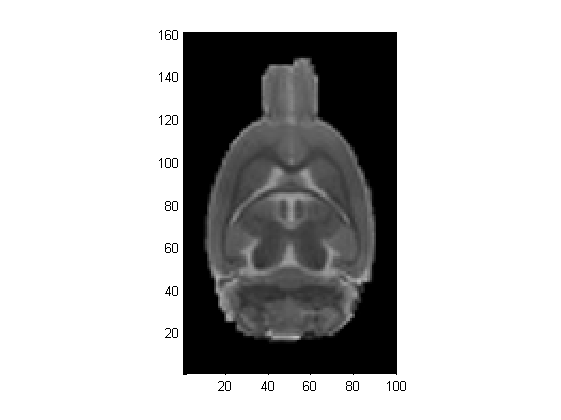
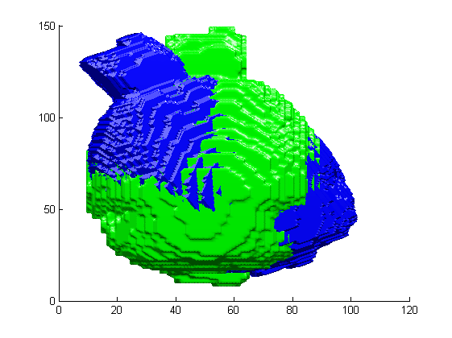
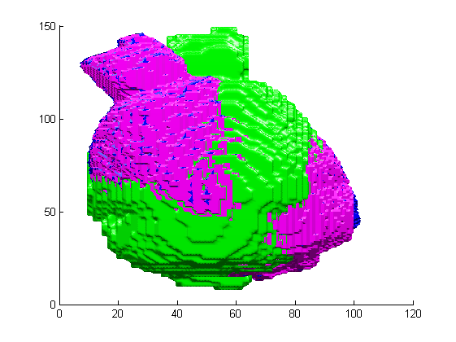

Contents
function varargout = demoRotateImage3d(varargin)
Lecture
imgDir = fullfile('d:', 'images', 'amib', 'clermont', 'roi_memri');
fileName = fullfile(imgDir, 'BRNOR39e5p1', 'BRNOR39e5p1Ball5Msk160.mhd');
img = metaImageRead(fileName);
imgCrop = img(1:160, 31:130, 81:160);
imgCrop = imRescale(imgCrop);
figure(1); clf; hold on;
orthoSlices(imgCrop);

Creation du maillage
imgCropBin = imopen(imgCrop>0, ones([3 3 3]));
rot = createEulerAnglesRotation(10*pi/180, 20*pi/180, 30*pi/180);
rot2 = recenterTransform3d(rot, [50 80 40]);
[f0 v0] = isosurface(imgCropBin);
figure(2); clf; hold on;
drawMesh(v0, f0, 'facecolor', 'g', 'linestyle', 'none');
set(gcf, 'renderer', 'opengl')
camlight left
camlight right
lighting phong
vt = transformPoint3d(v0, rot2);
drawMesh(vt, f0, 'facecolor', 'b', 'linestyle', 'none');

Interpolation de l'image
I = Image3D(imgCrop);
interp = LinearInterpolator3D(I);
samp = ImageResampler(I);
trans = MatrixAffineTransform(inv(rot2));
tim = BackwardTransformedImage(interp, trans);
I2 = samp.resample(tim);
imgTransBin = imopen(I2.getBuffer>0, ones([3 3 3]));
[ft vt] = isosurface(imgTransBin, .5);
drawMesh(vt, ft, 'facecolor', 'm', 'linestyle', 'none');
